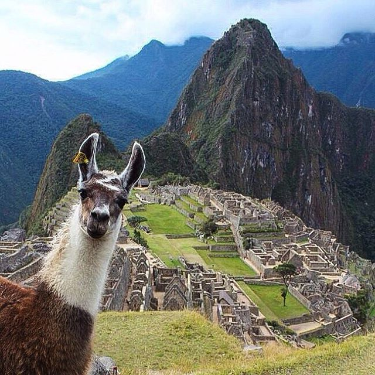
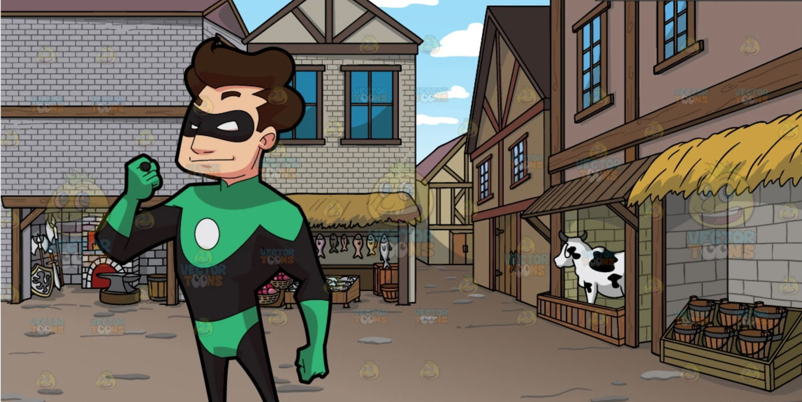
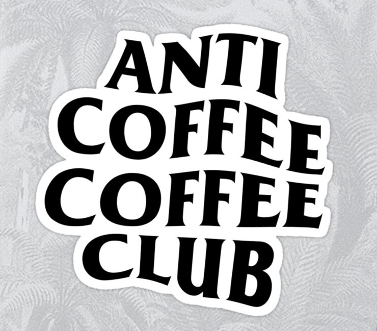
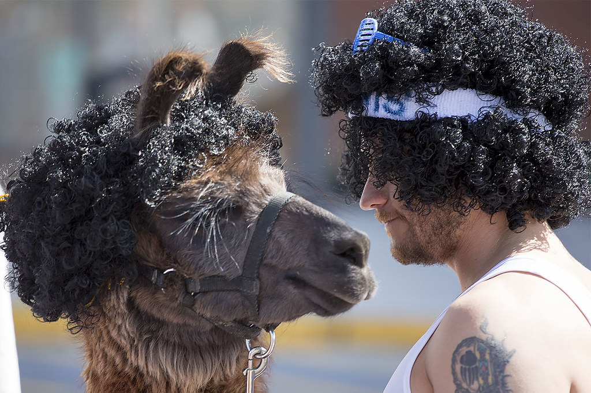
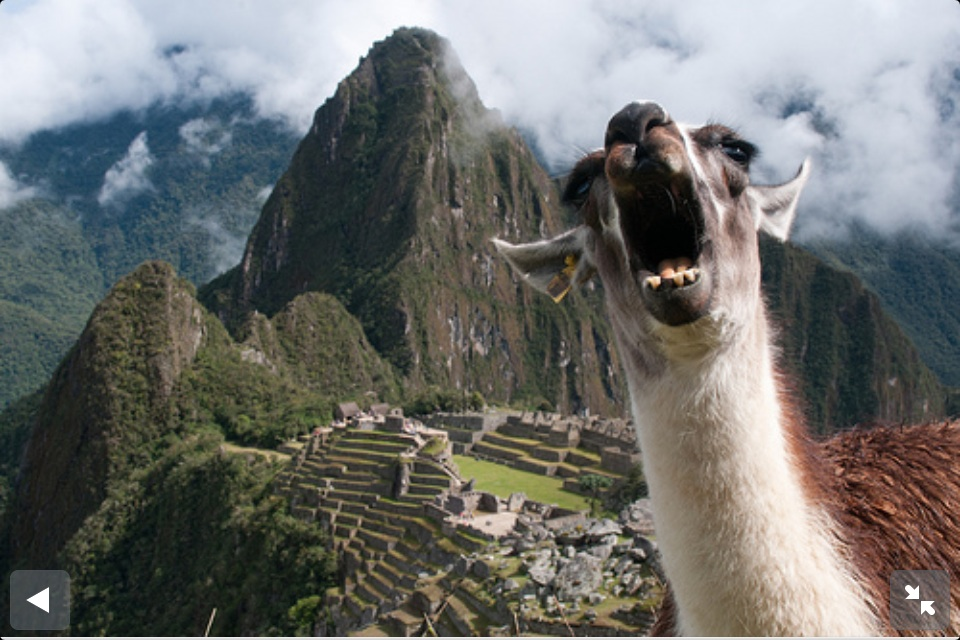
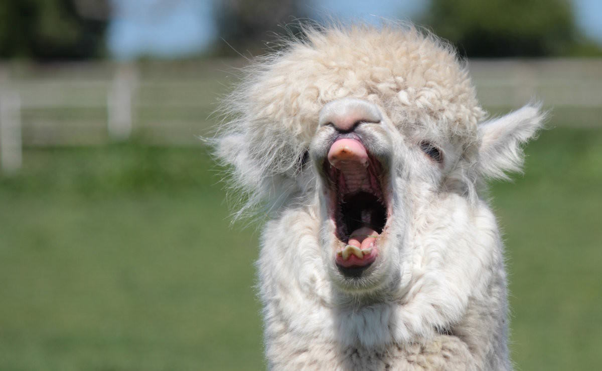
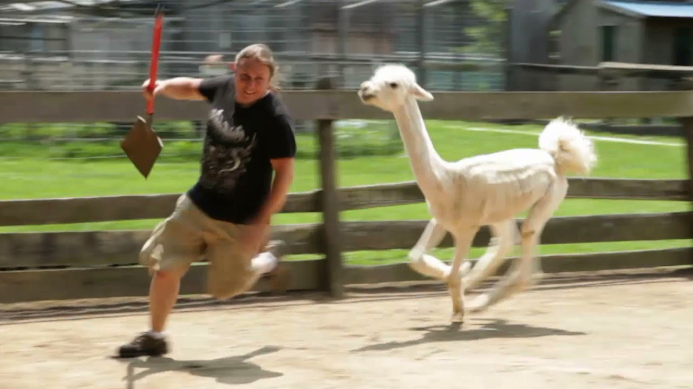
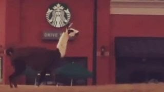
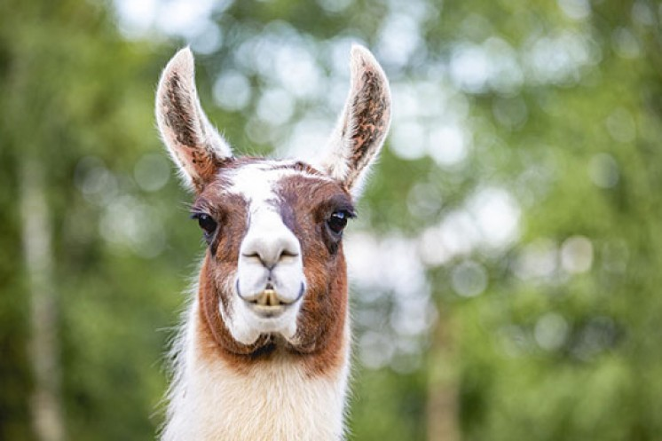

Once upon a time, there was a llama. His name was Cuzco. He was a very rich llama, and ruled over all of the people in a small village in Equador. He loved munching on coffee beans and yelling at the peasants in his village. One day, an evil porcupine named Eezma came to the village to strike fear into the peasant's hearts. Cuzco was faced with a dilemma. He had to either protect his peasants, or he could let them face the wrath of Eezma.
Since he didn't care much about the peasants, but he cared very much about himself, the llama was then forced to protect his empire. Eezma took control of the village and had almost taken over completely as an empress. Cuzco was locked up and forced to only look at his peasants through his embellished window, as there were no mirrors in the room he was locked in. He didn't know what to do at this point, and wanted to develop a plan.

Unfortunately for himself, Cuzco was not the planning type. He spent the majority of four and half days crying and feeling bad for himself in a corner. It made all the subjects below who could hear his wailing a bit uncomfortable. But in a stroke of luck, one of those uncomfortable subjects happened to be his only friend, Pacha. The man, clothing as green as ever, instantly recognized the sobs of the former emperor (an all too familiar sound). "Why the long face, pal?" he called up to the window.
Pacha was a kind and loving person. He would always come help out Cuzco whenever he was in distress. Pacha was like a dad to Cuzco. Pacha loved who Cuzco was as a person. The only thing that Pacha hated about Cuzco was the coffee beans. Cuzco swore to himself that he would never drink coffee because he was scared of dying again.
While Pacha was working on helping Cuzco escape, Cuzco thought to himself, "This is easy, I can just avoid any coffee shops, or coffee farms! However while Cuzco was locked in, evil Eezma started her own coffee business by slaving the villagers and built coffeeshops in every single block and corner of the village.
Pacha lept through the window after scaling the tower's wall, somehow remaining unnoticed. Cuzco, who was sobbing in bed until he tuckered himself out, jumped up and started hysterically shrieking for help. Once he realized it was just Pacha, he slapped him with his hoof for scaring him so much. On their daring escape, Pacha had brought clothes for Cuzco to slip into, to disguise that he was a llama and not Pacha's simple wife. Upon Cuzco's appearance into the blinding daylight, he started hysterically screeching again. Coffee beans. COFFEE BEANS EVERYWHERE. Everywhere Cuzco turned, the almighty bean was staring at him straight in the face. Collapsing in a heap, Cuzco started fading in and out of consciousness.
Fortunatelly for Pacha, he did not know CPR, but one of the coffee shop's owners did, Kronk. While Kronk was bringing Cuzco back to life, Pacha was regretting helping Cuzco, why did this always happen to him. Once Cuzco woke up, he slapped Kronk because, Kronk was a rat, who wants to be kissed back to life by a rat? Not this emperor. Pacha thanked him, and apologised, but ended up having to blindfold Cuzco and cover his nose otherwise his ears would have fallen off from Cuzco's yelling.
Leaving poor Kronk slapped silly, Pacha picked up Cuzco and made a run for the edge of the village, away from most of the coffe shops. "What is going on?!" he asked, taking off the the covers off of the llama's head. Cuzco explained how Eezma was trying to take everything from his AGAIN and it was really hurting his self esteem. Pacha promised he would do his best to help save the village--and restore Cuzco's ego.
After spending days living in a small camp in isolation, Cuzco suddenly came up with the idea of opening his own coffee chain. Cuzco believed that this would be the only way to compete and slowly take back what Eezma had taken from him. Knowing how much this meant for Cuzco, Pacha willingly accepted the idea although he knew what his fate would be if he were to accept this idea. Pacha did not want to fail what he promised with Cuzco and so they began their own coffee empire called Starbucks.
In the first few months, Starbucks was a massive hit with the locals. One thing lead to another, and Pacha and Cuzco were able to turn their humble cafe into a global chain. Cuzco's ego mattered no more, as he had something only a few llamas would ever dream of; a best friend and business partner that supported his dreams.
